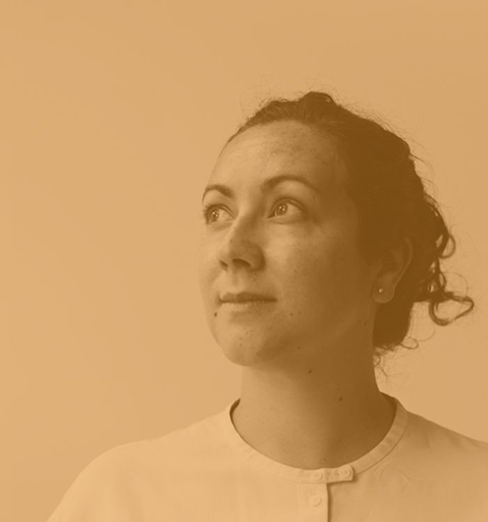

Susana Carvalho
Nome: Susana Carvalho
Nacionalidade: Portuguesa
Email: info@carvalho-bernau.com
Site: www.carvalho-bernau.com
Susana Carvalho é professora de Design Gráfico (BA) na Royal Academy of Arts, The Hauge;
Previamente, também ensinou tipografia no programa de Design Gráfico (BA) na ArtEz Academy, Arnhem.
Susana é co-fundadora do estúdio de design holandês, Carvalho-Bernau.
O estúdio baseado em The Hague, nasceu em 2005, pela mão de Susana Carvalho e Kai Bernau. Foca-se sobretudo nas áreas da cultura e publicação, ambas local e internacionalmente.
Este estúdio mantém uma pequena estrutura, o que permite o trabalho de forma mais próxima com os clientes, mantendo, no entanto, colaborações ricas e flexíveis com colaboradores em qualquer área de trabalho.
Atualmente, o foco do atelier Carvalho Bernau é a possibilidade de fundir media tradicional, atual e futura - desde o ponto de vista tipográfico a experiência de utilizador. Para isso, o estúdio desenvolve livros, design editorial e tipográfico, fontes, design web e de interação e estratégias de pesquisa e desenvolvimento, enquanto Susana e Kai mantêm o seu tempo dividido entre comissões, educação, e projetos pessoais.
Susana é co-fundadora do estúdio de design holandês, Carvalho-Bernau.
O estúdio baseado em The Hague, nasceu em 2005, pela mão de Susana Carvalho e Kai Bernau. Foca-se sobretudo nas áreas da cultura e publicação, ambas local e internacionalmente.
Este estúdio mantém uma pequena estrutura, o que permite o trabalho de forma mais próxima com os clientes, mantendo, no entanto, colaborações ricas e flexíveis com colaboradores em qualquer área de trabalho.
Atualmente, o foco do atelier Carvalho Bernau é a possibilidade de fundir media tradicional, atual e futura - desde o ponto de vista tipográfico a experiência de utilizador. Para isso, o estúdio desenvolve livros, design editorial e tipográfico, fontes, design web e de interação e estratégias de pesquisa e desenvolvimento, enquanto Susana e Kai mantêm o seu tempo dividido entre comissões, educação, e projetos pessoais.
